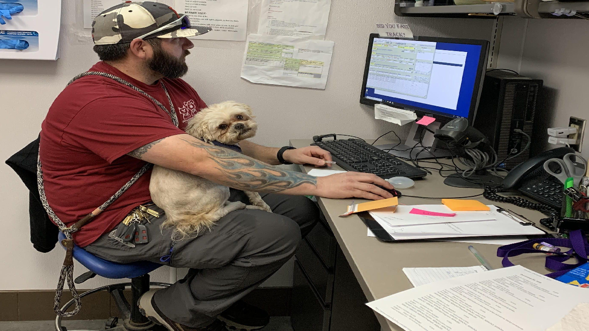

Overview
For my senior Computer Science capstone project, I worked with a team to develop a pet foster management system for Midland County Pit Stop, a nonprofit rescue organization that has placed thousands of animals since 2018.
The application was designed to help the organization manage information and workflows surrounding animals, fosters, volunteers, adoptions, supplies, scheduling, and financial records.
My Role — QA Technical Lead
I served as the team's QA Technical Lead, responsible for planning and coordinating the project's software quality assurance efforts.
Rather than only testing individual features, I worked to establish a structured testing process that could verify the application against both technical requirements and the real-world needs of the client.
Testing & Quality Assurance
- Defined and executed test plans for core application modules.
- Tested pet profiles, adoption records, foster and volunteer tracking, supply requests, calendar and reminder functionality, and financial reporting.
- Validated role-based access controls to ensure users could only access functionality appropriate to their assigned roles.
- Tested SQL data integrity and verified that information remained consistent across application workflows.
- Validated contract generation and financial recordkeeping against client requirements.
- Documented defects and worked with developers to reproduce and resolve problems.
Technical Work
The project combined a C# Windows desktop application with a SQL database. This required testing both the application's user-facing behavior and the underlying data operations.
A significant part of the QA process involved verifying that actions performed through the application produced the correct database results and that related records remained consistent.
I also considered different user roles and workflows, testing the application from the perspective of the different people who would interact with the system.
Project Screenshots
Screenshots and diagrams from the project can be displayed here to demonstrate the application and development process.

What I Learned
This project gave me practical experience with software quality assurance in a collaborative development environment. I learned how important structured testing is when software needs to satisfy real client requirements rather than only function in controlled demonstrations.
Serving as QA Technical Lead also strengthened my ability to organize technical work, communicate issues clearly, and work with developers to resolve problems while keeping the overall project requirements in mind.